深入了解MD4，MD5，SHA哈希密码算法与破解技术
简介
密码（password）是最广泛使用的认证系统之一，防止未经授权的用户访问系统，无论是离线还是在线。在大多数系统中，密码是通过加密存储的，以便为每个用户提供安全性。然而，在这些密码的加密之内，仍然存在漏洞。本文将回顾关于密码哈希（hash）函数的学术和出版文献，特别指出MD4，MD5，SHA算法以及在Linux操作系统中使用Salt字符串。
在此之后，洞察密码破解的方法为检验（reviews），确定字典攻击，暴力攻击和彩虹表（Rainbow Table）的使用。本次审查将允许更深入地了解安全功能和可能的漏洞在此机制内进行调查后。调查将使用UNIX开发的软件John Ripper和RainbowCrack来查看最常见的密码破解方法之一。
John Ripper是一个密码破解器，它将多密码密码破解技术组合到一个程序中，更具体地说，利用字典攻击和强力方法来识别用户的密码，并且可以针对各种密码加密算法运行。暴力和字典攻击生成所有可能的明文密码，因为它处理和比较哈希与目标哈希，一旦匹配的密码可以识别。彩虹表攻击是一种以空间换时间的黑客攻击方法，它将进行预计算，并把结果存储在所谓的彩虹表中。
彩虹表（彩虹表如何工作？ ）包含目标密码哈希运行直到它达到匹配的纯文本/散列链的列表。调查将首先主要在Linux操作系统中使用John Ripper ; 对该系统中的密码文件运行字典/强力攻击，其使用SHA512算法。在Windows操作系统将调查Rainbow攻击，以从MD5哈希函数提取密码。我们将调查这两个软件，以允许解释哈希函数和密码破解技术在现代操作系统及其中的文件系统。下列调查突出并解释了使用破解技术作为访问用户系统的手段突出显示了在入侵方法和计算机取证中的使用。此外，这将提供对密码哈希算法的安全功能的进一步了解，并识别关键计算机网络安全中的漏洞，允许我们批判性地评估，理解和部署这些方法。
哈希函数（MD4，SHA，MD5和DES）和Salt字符串
所有系统通常都需要使用用户名和密码进行身份验证。解释了获得访问的典型实例分为两个阶段：
认证（Authentication） - 这是系统检查标识符的地方; 这可能是一个电子邮件地址或用户名。然后它将根据系统的密码文件检查密码，如果匹配正确，则允许访问。
授权（Authorisation） - 这是系统根据其数据库检查标识符或密码，以识别用户在该系统中的权限级别。
所以大多数系统都以加密格式存储和发送密码，以最大限度地防御潜在的攻击和漏洞。大多数系统包含使用输入字符串创建输出字符串的单向函数。
哈希算法是加密口令的最受欢迎的方法。当用户以明文形式创建密码时，它通过散列算法运行以产生存储在文件系统中的密码文本。三种最广泛使用的算法是MD5，SHA和RIPEMD; 然而所有算法都来自MD4的格式
总结了所使用的主要算法：
·MD4：具有3轮16步，输出位长度为128位。
·MD5：具有4轮16步，输出位长128位。
·SHA-1：具有4个20阶的步长和160位的输出位长度。
·RIPEMD-160：具有5轮16步，输出位长160位。
·SHA-256：具有64轮单步，输出位长度为256位。
·SHA-384：实际上与SHA-512相同，除了输出被截断为383位。
·SHA-512：具有80个单步的轮数和512位的输出位长度。
Linux和Windows之间的安全特性的主要区别是UNIX系统使用Salt Strings。如（Whitaker和Newman，2005）所述，salt字符串生成随机生成的值，该值随着使用密码哈希处理的每个密码存储。这允许为系统中的每个密码提供额外的安全性，特别是对于简单密码或重用密码。
调查字典和彩虹攻击密码哈希
首先，我们将使用John The Ripper来研究 Linux内字典攻击和暴力攻击的功能。大多数Linux系统可以选择使用哪个哈希函数来存储密码，在Linux系统中，使用的哈希算法在文件/etc/login.defs中定义，以查看我们可以执行的算法：
$ grep -A 18 ENCRYPT_METHOD /etc/login.defs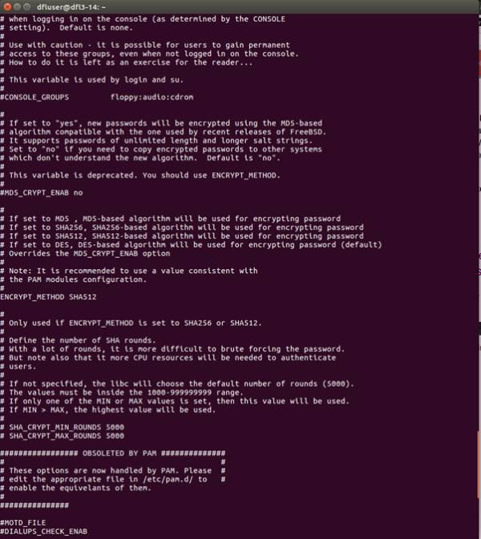
在这里我们已经确定这个系统使用SHA512如上所述。在此系统上，所用的用户可以访问/ etc / shadow文件
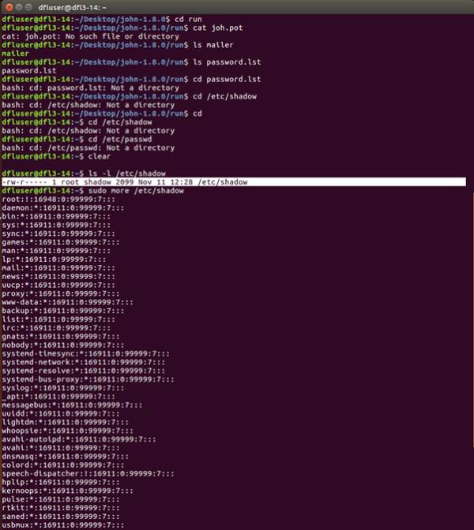
其中包含每个用户密码的哈希值。
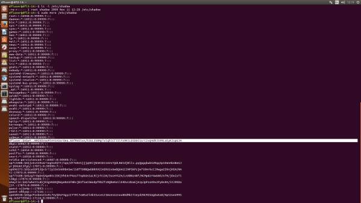
我们可以看到，我们现在可以访问密码的String值和Hash值。这里的字符串值是$ 6 $，它再次标识为SHA512散列算法
这里，这使我们可以看到如何存储哈希函数和盐串。例如，如果散列与$ 1 $一起存储在它的前面，我们将知道它使用MD4算法来生成散列。为了运行字典攻击，我们必须在文本文件中具有目标密码哈希。这可以通过复制密码哈希值，只要你有权限，但也可以使用功能，如Linux中的Unshadow命令，在我们安装了John

运行命令：
$ sudo unshadow / etc / passwd / etc / shadow> passwd.1这现在创建一个文本文件，密码哈希/ etc / shadow到文件passwd.1，我们需要对字典运行
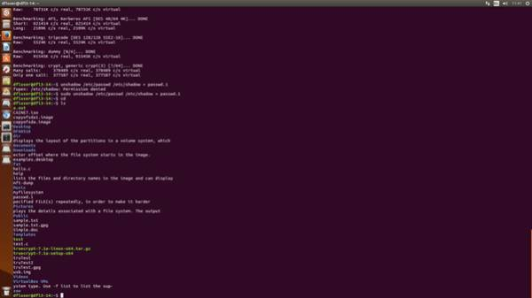
在John中，存储了用于攻击的词典字典，需要更大的词典以允许更快的解密和对更复杂的密码的攻击
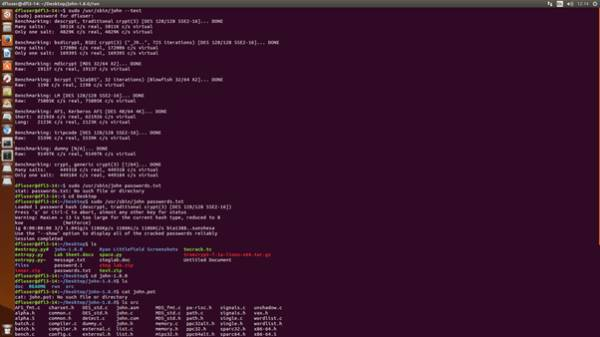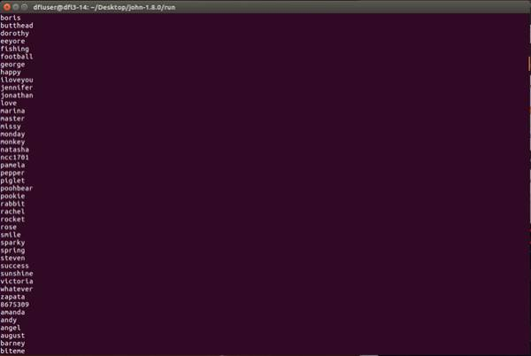
包含已保存的哈希值的密码文件现在通过John运行。John从之前显示的字典中获取字符串，并计算每个可能的值，直到找到与目标哈希的完全匹配，识别密码。我们现在通过发出以下命令来执行此操作：
$ sudo / usr / bin / john passwd.1
可以看出，我们现在已经加载了6个密码散列（因为这个系统上有6个用户）。出于本调查的目的，我们只想识别dfluser的密码。之后john运行字典攻击，它就会识别匹配
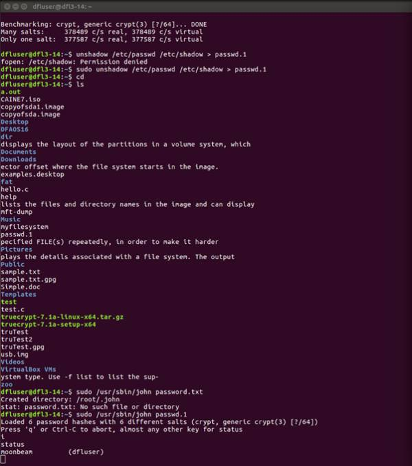
并将其存储
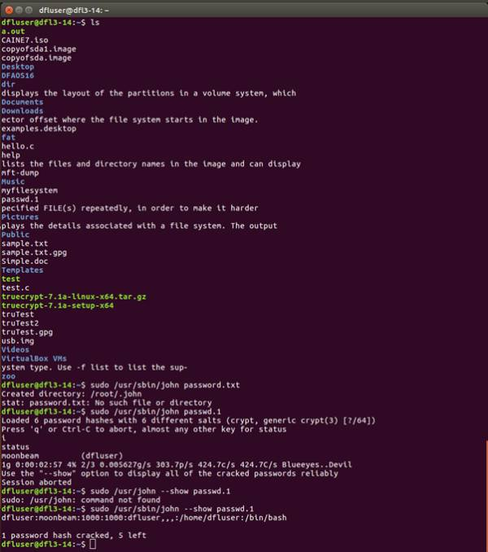
根据密码的复杂性，这可能需要不同的时间。正如你可以看到，在Linux中运行使用John的字典攻击对于简单的密码是相对有效的，并且使用这种字典攻击方法可以很容易地在Windows和Linux文件系统上使用。例如，如果被攻击者想要从另一个系统（如Windows）或SQL文件

中查找散列值，则攻击者只需创建一个带有散列的文本文件（或可能是密码文件转储）值并通过john的字典攻击运行。然而，显然，密码的复杂性和字典的大小将决定处理匹配所需的时间。
引用RainbowCrack软件利用时间存储器权衡技术来加速密码破解的过程。它通过使用彩虹表来做到这一点; 预先计算的明文和散列。为了做到这一点，必须首先创建彩虹表，以加快攻击者的密码破解过程。基本上这允许攻击者做的是在预先计算的表中存储每个可能生成的哈希，类似于John实时生成的哈希。
构建彩虹表需要相当长的时间，但是一旦创建，它允许密码破解数百次比标准字典攻击。解释了Rainbow Tables包括散列函数和缩减函数; 在这里，散列函数将明文处理为像操作系统那样的哈希。减少将散列处理为明文。彩虹表允许这种快速处理的地方在于它包括这些单向散列和缩减函数的链。从
我们可以看出，该表由明文字符串组成，每个密码通过它们的起点和终点。
安装RainbowCrack 后，我们看到我们有许多不同的组件组成软件
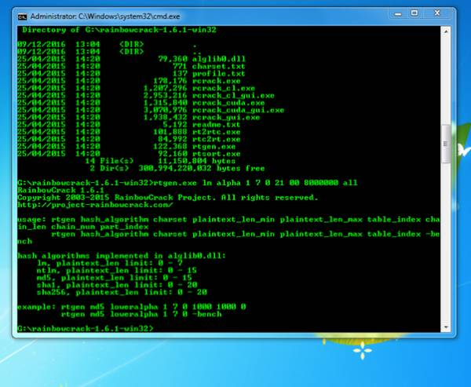
Rtgen.exe允许我们根据我们想要的要求生成彩虹表。一旦我们创建了这个，表需要被排序链以允许前面讨论的过程，这是使用rtsort.exe完成。最后，rcrack_gui.exe是GUI，它允许我们根据目标密码哈希查找排序的Rainbow表。要开始调查如何操作，创建彩虹表。
详细介绍了命令行语法rtgen.exe如下：
Rtgen hash_algorithm charset plaintext_len_min plaintext_len_max table_index chain_len chain_num part_index为了这个调查的目的，我们将创建一个彩虹表集与6张彩虹表，以允许更快的计算时间。
以下命令用于生成彩虹表：
C：\ md5 loweralpha-numeric 1 7 0 3800 33554432 0由于我们使用密码中具有较低字母数字的MD5算法，这是我们需要破解此密码。然而，对于更复杂的密码，可能需要具有不同密码散列函数的更复杂的彩虹表。CPU现在将计算表中的所有彩虹链
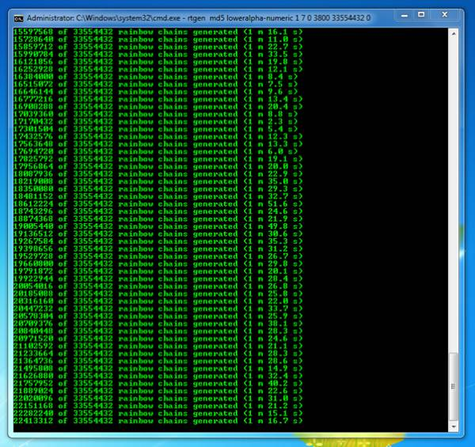
该表由33,554,432个链组成。创建的彩虹表大约需要6个小时在普通处理器上完成，这突出了文件的复杂性，考虑到这是破解非常简单的密码的最基本的表。一旦彩虹表的计算完成
一旦加载，密码哈希就被添加到rcrackGUI
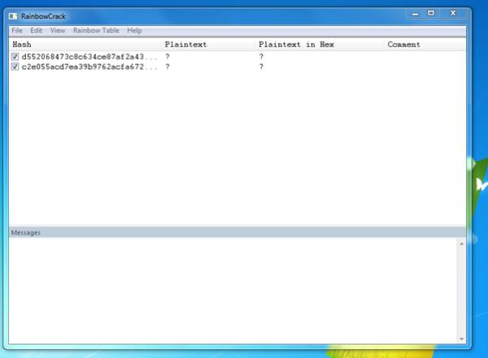
我们之前上传的MD5 LowerAlpha数字彩虹表。
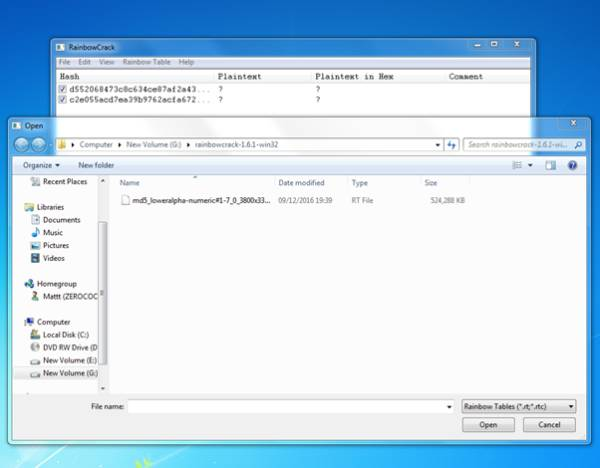
一旦完成，密码以纯文本和十六进制格式显示，
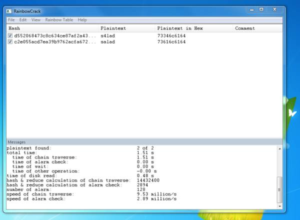
完成需要1.51秒。这突出显示，尽管彩虹表最初可能需要大量的时间来创建，一旦创建，密码破解可以根据攻击者可能具有的表格轻松和快速地完成。
结论
已经进行了大量研究来检查在系统中使用密码哈希所面临的有效性和漏洞。然而，重要的是要强调，为了成功破解操作系统中的密码，如本调查所示;攻击需要获得具有目标密码的哈希值的密码文件，或者通过在目标上实施分组嗅探。大多数讨论的文献回顾了这样的事实，即简单的密码哈希更容易破解，由于破解复杂密码的计算处理。正如我们从调查中看到的，使用的密码和散列算法（例如SHA526）越复杂，由于破解计算所需的时间长度，攻击者可能会变得越不切实际。在此调查中使用Dictionary和Rainbow攻击允许我们分析密码哈希的影响，并比较当密码破解时可以使用的替代方法。通过对密码哈希和破解技术的更深入分析，本调查强调，系统中密码安全的最佳方法是确保包含大写，小写，数字和特殊字符的强大的密码创建。虽然这不能完全防御这些攻击，但它确实对攻击者造成不切实际，可能会起到威慑作用。

来自：Linso的混元随笔
链接：https://zhuanlan.zhihu.com/p/25446848（点击尾部阅读原文前往）